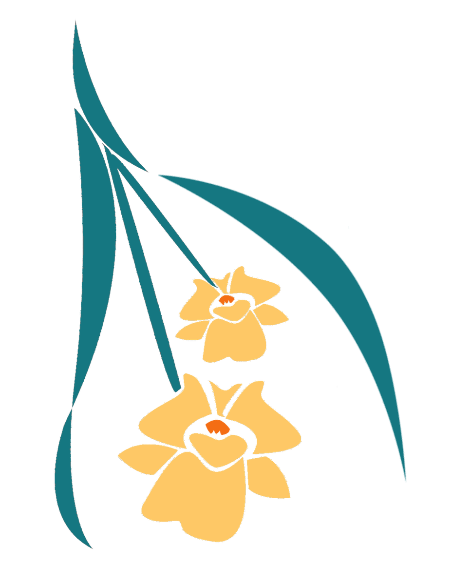
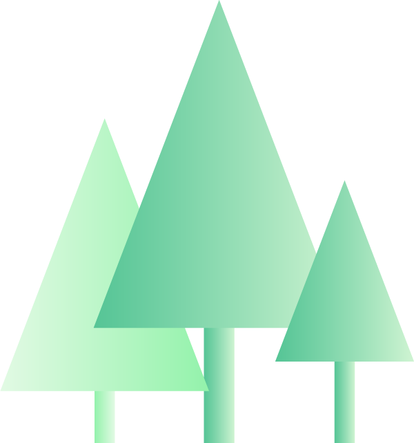
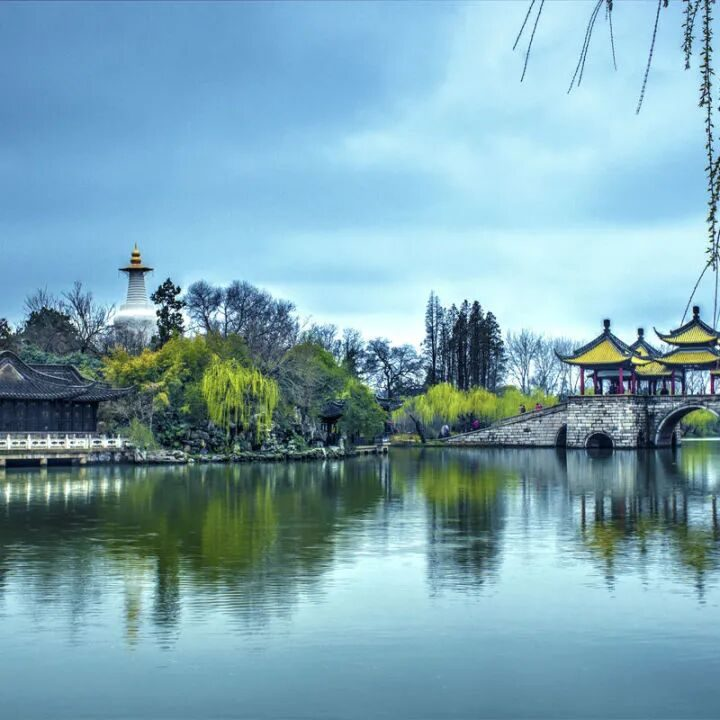
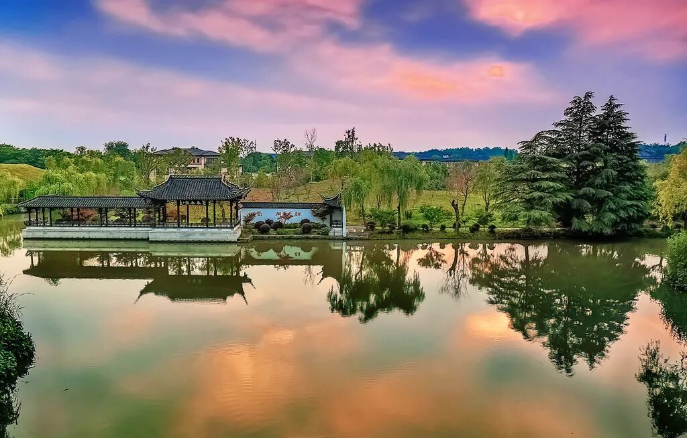
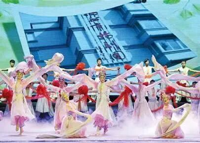
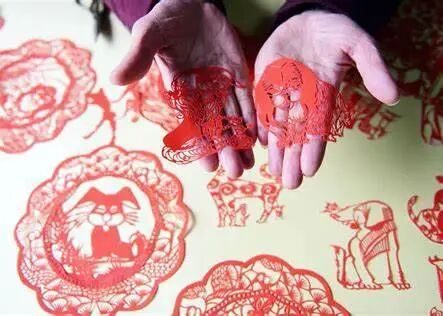
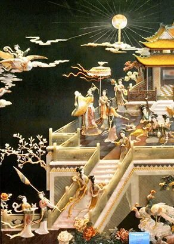
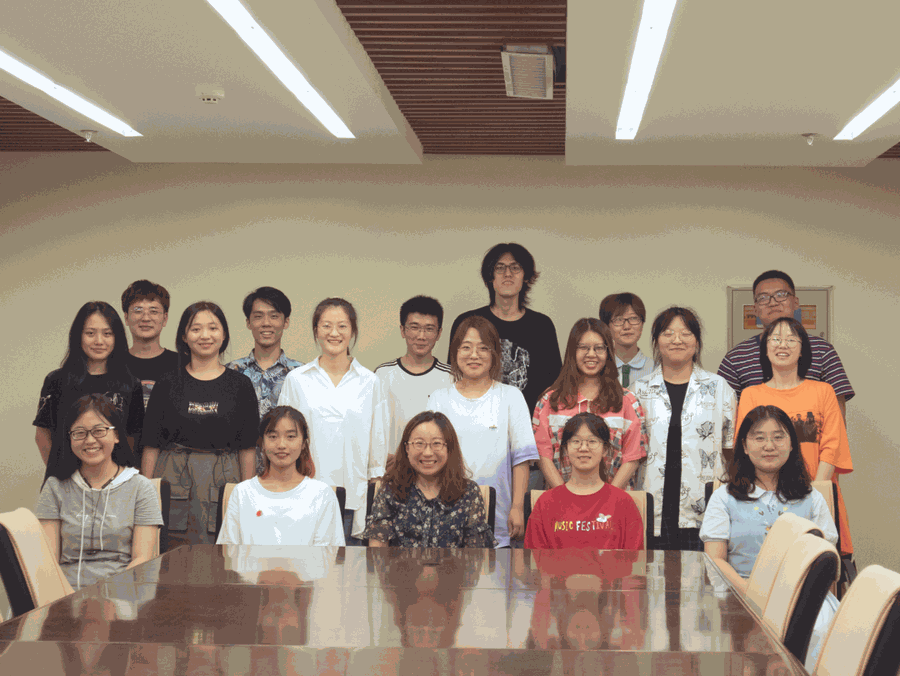
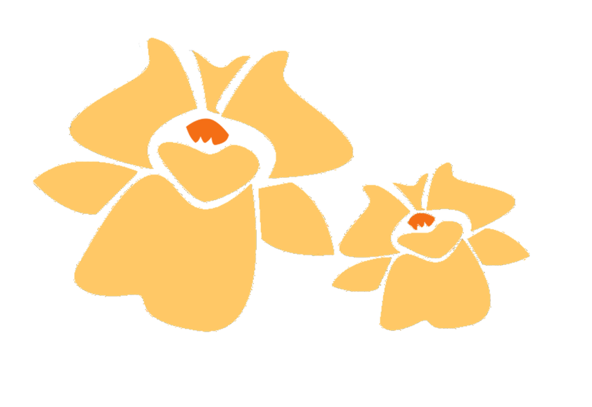

【徜扬恣肆·三】沿途的风景比终点更精彩

ALL GOOD THINGS COME

比
终
点
更
精
彩
沿
途
的
风
景
准备好了一切，正在幻想在扬州的快乐生活，突如其来的疫情打破了所有计划。等待消息期间，虽然知道可能性很小很小，我也还抱着一丝期望，希望实践能正常进行，希望我们能真正地去到扬州这个诗意的城市去感受她的美。

有遗憾，有失落，但依然怀揣着热情，
我们开始了线上的扬州文化调研。



扬州的魅力，来自于江南美景。
扬州自古以来是江苏的名城之一，
它的美是无法用言语来形容的，
轻风丝雨，古老的石墙，
寂寞幽深的小巷......
袅袅炊烟与细雨的杂糅宛如一层层薄雾
笼罩着我们的视线，
分不清现实与梦境。
扬州的魅力，来自于扬州美食。
扬州是中国历史上最繁华的城市之一，
又是中国四大菜系之一淮扬菜系的发源地，
三丁包子、千层油糕、双麻酥饼、
翡翠烧卖、干菜包、野鸭菜包、
糯米烧卖、蟹黄蒸饺、车螯烧卖、鸡丝卷
——扬州十大名点的名字
一说出来就让人流口水。
扬州的魅力，来自于运河文化。
“应是天教开汴水，一千余里地无山。”
这是唐代诗人皮日休在
《汴河怀古》中描写大运河的诗句。
大运河的通航，
极大促进了中国南北经济的交流和发展，
也促进了运河沿岸经济的繁荣和城市的兴起。
如果说长城是中华民族挺立的脊梁，
大运河就是流动的血脉，
是一部书写在华夏大地上的宏伟诗篇。



扬州的魅力，来自于非遗文化。
古运河催生和哺育了扬州城，
在孕育了丰富灿烂的物质文化遗产的同时，
也培育了大量非物质文化遗产。
扬州雕版印刷技艺、扬州漆器髹饰技艺、
扬州玉雕、扬派盆景、扬州“三把刀”技艺、
扬州清曲、扬州评话、扬州弹词、
扬州民歌、扬剧以及扬州木偶戏等，
都体现了扬州人民的非凡创造力
和特有的地域文化精神。

行者无疆，对于行者来说，
永远没有地域的限制。
很幸运能遇到大家，
正是因为有你们，
这次实践才有了它独一无二的色彩。
行者永远在路上，文化也永远在路上。


来源 | 行者无疆实践团
文字 | 赵庭芳
排版 | 赵庭芳
审核 | 付媛 康艳虎